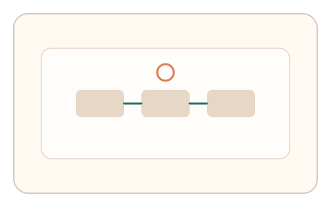
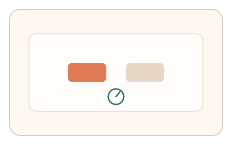

#140
F：意图/现实耦合 × 异步/随机插入（路径/预测误差）
已扩展
意图前瞻选择
在操作流中插入“下一步要做什么”的即时选择，记录反应时与路径停顿。
概念原文
在操作流中随机插入“下一步你要做什么”的快速选择，系统记录反应时与路径停顿并做异常检测。
用“即时意图反应”替代知识性问答。
研究背景
前瞻记忆与意图保持会影响即时选择速度。插入式问题可捕捉“意图‑操作”的自然反应，而脚本往往表现为过快或无停顿。
核心机制
- 在操作流程中随机插入意图选择。
- 用户快速选择下一步动作。
- 记录反应时与路径停顿。
- 与历史基线或群体分布比较。
用户流程
- 步骤 1：用户进行常规操作流程。
- 步骤 2：出现意图选择提示并立即作答。
- 步骤 3：系统记录反应时与停顿并判定。
判定信号
意图选择反应时
真实用户需要短时检索当前意图。
插入前后停顿
自然操作会出现轻微停顿与调整。
判定逻辑
反应时与停顿需落在合理区间；过快、无停顿或与上下文不匹配判异常。
对抗面
- 脚本读取 DOM 并瞬时作答
- 固定反应时伪装
防御与缓解
- 随机化插入时机与选项布局
- 加入上下文相依的选项
- 多次插入取一致性
可达性与风险
提供键盘选择与更长响应窗口，避免对行动受限用户不友好。
- 用户误解选项导致误判
- 过多插入降低体验
可视化状态

状态 1：流程插入
在操作流中出现意图提示。

状态 2：快速选择
用户快速选择下一步动作。
状态 3：停顿判定
分析反应时与路径停顿。
参考资料
Prospective memory
说明意图保持与前瞻记忆机制。
Reaction time
说明快速选择的反应时特征。